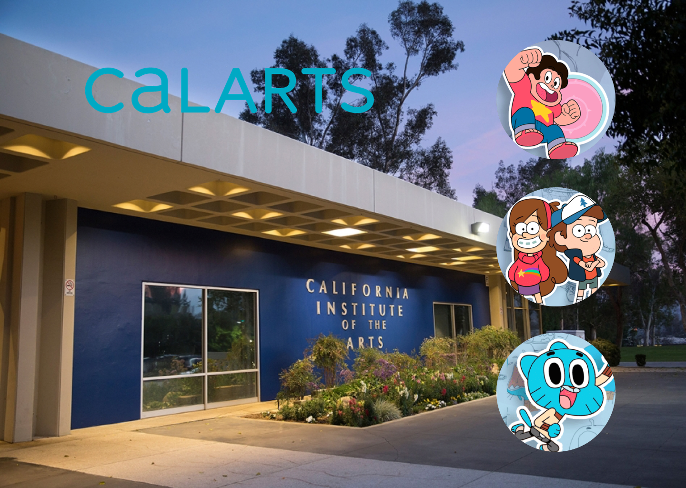

The first year of the Program’s intensive four-year curriculum is devoted to courses in life drawing, color and design, storytelling and character animation—both traditional and CG. The second year students incorporate elements such as dialogue, sound effects and music. In the third year, students include story classes geared toward short-form traditional animation, and CG computer animation. In the fourth year, students move up to the highest level of the core classes and can customize their curriculum according to their own specific areas of interest.
The Average price of the 4 year tuition is $229,344 or $57,336 a year
Types of careers you could go into after earning this degree animator, game, character designer, or anything that requires animationg or characters to be drawn.
Requirements to be accepted to this program Must have demonstrated experience working with the live model and ideally have atleast one years worth of studying figure/ life drawings. 1160 on sat and a gpa of atleast 3.34 maintaned.
It takes 4 years to complete this program and you can apply here. https://calarts.edu/admissions/apply/application-process